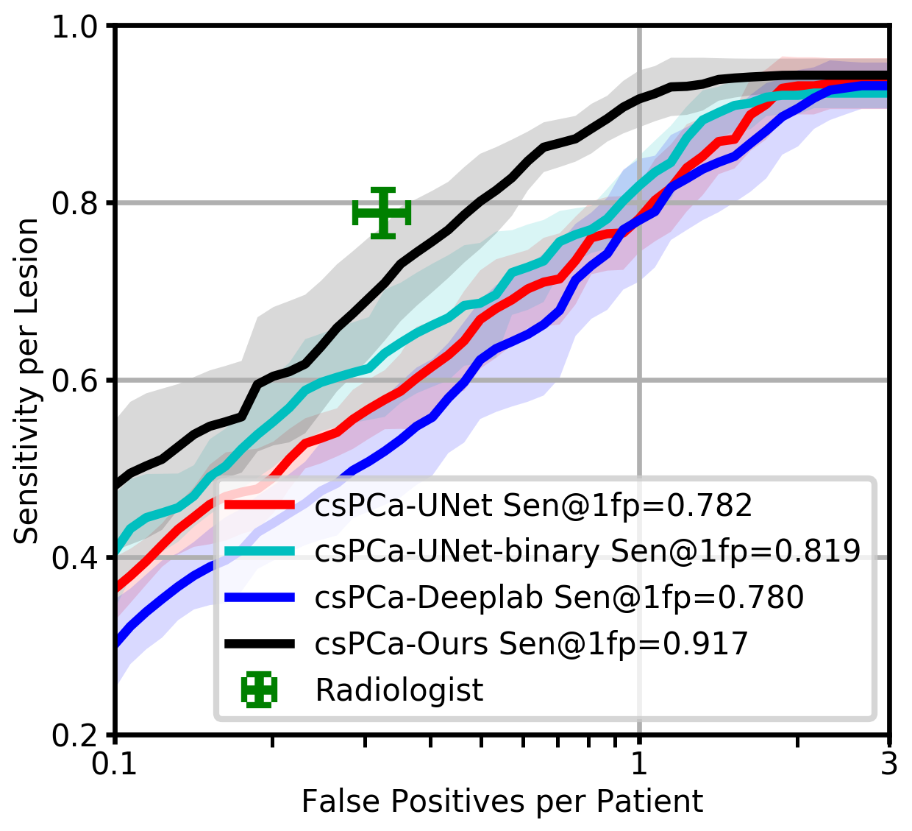
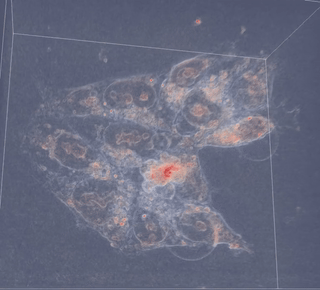
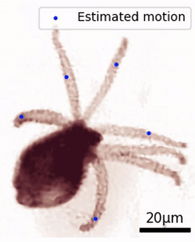
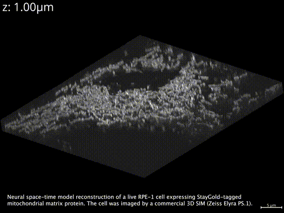
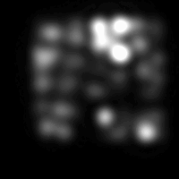

|
Ruiming Cao I am a research scientist in Adobe’s NextCam team led by Marc Levoy. I obtained my Ph.D. from UC Berkeley, where I was advised by Laura Waller and supported, in part, by Siebel Scholarship. I was also affiliated with the Berkeley Artificial Intelligence Research (BAIR). I was a research intern in Google Research in 2021 and an optical scientist intern in Meta Reality Labs Research in 2022. I received M.S. in Computer Science from UCLA in 2019, where I was advised by Kyung Hyun Sung and Fabien Scalzo. I received B.S. in Computer Science and Applied Mathematics from UCLA where I worked with Song-Chun Zhu. |

|
ResearchMy research focuses on motion modeling and dynamic imaging. I jointly develop the optical system hardware and the computational methods to enhance our capabilities for observing and analyzing fast and complex dynamics. I work on various image modalities, including digital photography, optical microscopy, medical imaging, and most recently cryo-ET. Optical sensing methods for dynamic imaging. I develop optical sensing hardware by enhancing signal encoding through dynamic sensors and novel contrast mechanisms, specifically designed for imaging moving samples. My work optimizes imaging hardware designs to improve signal quality and reduce acquisition time. Additionally, I have pioneered theoretical noise analysis for dynamic vision sensors, leveraging their unique properties for new applications.
Parsing dynamics and inverse problem optimization with machine learning. I work on inverse problem optimization algorithms that parse spatiotemporal correlations from unlabeled data, overcoming the limitations of frame-by-frame processing. The neural space-time model significantly enhances temporal resolution, image quality, and multi-modal alignment in image reconstruction. Furthermore, I am developing a large vision model for cryo-ET data processing tasks. |

|
 |
Joint prostate cancer detection and gleason score prediction in mp-MRI via FocalNet
Ruiming Cao, Amirhossein Mohammadian Bajgiran, Sohrab Afshari Mirak, Sepideh Shakeri, Xinran Zhong, Dieter Enzmann, Steven Raman, Kyunghyun Sung IEEE transactions on medical imaging, 2019 We propose a novel multi-class CNN, FocalNet, to jointly detect PCa lesions and predict their aggressiveness using Gleason score (GS). |
|
 |
Self-calibrated 3D differential phase contrast microscopy with optimized illumination
Ruiming Cao, Michael Kellman, David Ren, Regina Eckert, Laura Waller Biomedical Optics Express, 2022 PDF / Code We present a practical extension of the 3D DPC method that does not require a precise motion stage for scanning the focus and uses optimized illumination patterns for improved performance. |
|
 |
Dynamic Structured Illumination Microscopy with a Neural Space-time Model
Ruiming Cao, Fanglin Linda Liu, Li-Hao Yeh, Laura Waller ICCP, 2022 PDF / Video / Code We propose Speckle Flow SIM, a method that uses static patterned illumination with moving samples and models the sample motion to reconstruct the dynamic scene with super-resolution. |
|
 |
Neural space–time model for dynamic multi-shot imaging
Ruiming Cao, Nikita S Divekar, James K Nuñez, Srigokul Upadhyayula, Laura Waller Nature Methods, 2024 PDF / Blog / Code / Website We propose a neural space-time model (NSTM) that jointly estimates the scene and its motion dynamics, enabling high-quality reconstruction from sequential measurements. |

|
Noise2Image: Noise-Enabled Static Scene Recovery for Event Cameras
Ruiming Cao*, Dekel Galor*, Amit Kohli, Jacob L Yates, Laura Waller Optica, 2025 PDF / Code / Website We propose Noise2Image to leverage illuminance-dependent noise characteristics in event cameras to recover static scene intensity without additional hardware. |
|
 |
Sample motion for structured illumination fluorescence microscopy
Ruiming Cao, Guanghan Meng, Laura Waller Optics Letters, 2025 PDF / Code We propose using static speckle illumination and inherent sample motion to encode super-resolved information in fluorescence microscopy. |
|
Design and source code from Jon Barron's website. |